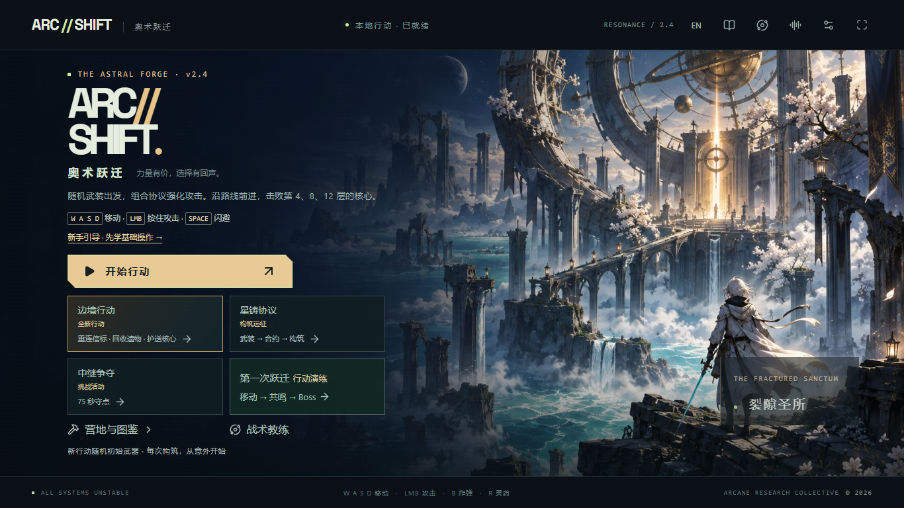
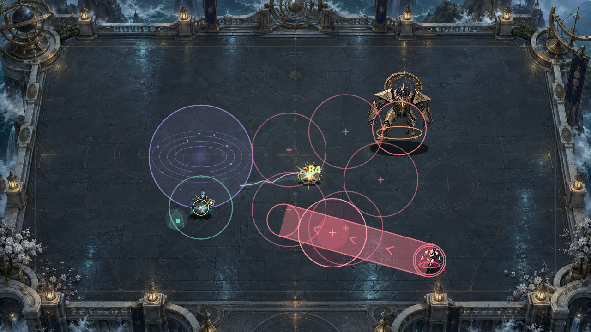
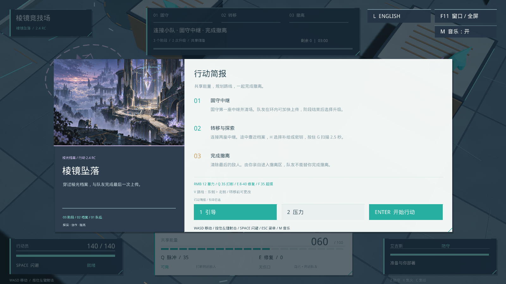
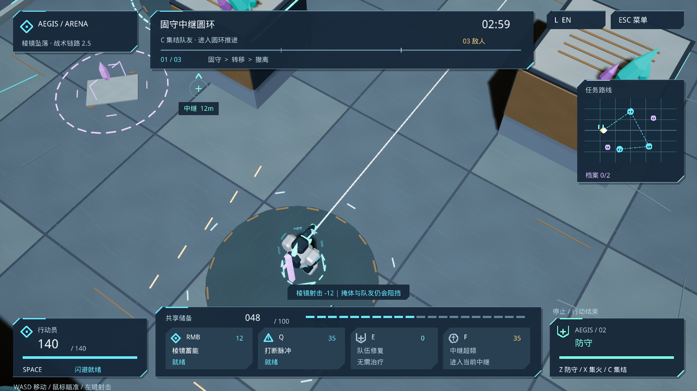

THE DESIGN QUESTION
丰富世界，
也为判断留白。
两个项目采用不同的美术语汇，却遵循相同的阅读顺序：先找到自己与威胁，再判断目标，最后读取细节。
本轮把世界观落实到面板、轮廓、色彩语义和反馈节奏。重点是让每一种装饰知道自己的位置，让每一种状态都有可信的提示。
- 01看见玩家 / 危险 / 目标
- 02判断方向 / 范围 / 资源
- 03确认命中 / 就绪 / 结果
01 / ARCANE RUINS
ARC//SHIFT
奥术遗迹 · 让力量拥有仪式感。
暗石承载战场，象牙白标记阅读，铜金提示行动。符文与环形结构服务于施法节奏；危险始终拥有独立的边界。
磨损的石面
铭刻的铜金
克制的能量光
#F5EBD3#E8BC70#83E7DD#FF704F让视觉焦点
从装饰回到角色。
背景符文压低对比。技能状态紧贴操作。友方余辉快速退场，敌方预警保持在可读层。
调色与形状表用于说明设计语义；并不表示每个场景只使用这四种颜色。
FIG. 01 从入口建立世界观
实机前后对照 · 图片按需加载
层级一个明显的开始按钮；模式选择退居第二层；设置与帮助保持可达。
纹理让边框、刻线与留白接续场景材质，避免界面像另一款应用。
轮廓在技能叠加时保留角色的深色衬底与清晰边缘，不以亮度淹没角色。
FIG. 02 危险在前，余辉在后
固定状态视觉夹具 · 非普通战斗实录
危险区用珊瑚橙、内向短线与中心叉共同编码。友方效果退到浅青细线层；减少动态与专注特效开启后，保留完整危险范围，减少装饰性轨迹与颗粒。
FIELD RECORDING 三种武器，实际操作反馈
58 秒浏览器录制 · 无声视频02 / TACTICAL SCI-FI
AEGIS ARENA
战术科幻 · 让判断拥有清晰坐标。
从整块说明面板，转向能够迅速扫读的战术终端。冷青引导操作，暖色暴露威胁；资源、队友与任务各司其职。
结构示意，非实际运行界面。
先读命令，
再看仪表。
切角边缘与方向短线建立精确感。能力状态用文字和形状共同表达：就绪、冷却、能量不足，不要求玩家仅凭发光猜测。
紫色档案与敌人如有近似色，继续用图形、标签和位置区分。
FIG. 03 从行动简报进入战术语境
实机前后对照 · 图片按需加载
FIELD STUDY 从蓄力输入，到资源确认
原生战术 HUD / 受控视觉检查
战术感来自信息的位置、状态与方向。
装饰不能替代真实的射线、资源与冷却规则。
03 / FEEDBACK CHOREOGRAPHY
力量有峰值，
也需要退场。
将技能反馈拆成三个拍点：先预示方向与范围，再给出命中重音，最后把视野还给下一次判断。
交互示意 · 程序 SVG 动画 · 非游戏录像
THE RESTRAINT IS PART OF THE DESIGN
有边界的
表现力。
减少特效不是删除信息。画面与性能都需要分配预算，并通过相同场景验证。
- 危险优先
- 敌方预警高于友方装饰；危险轮廓由实际攻击几何决定，不为好看扩大承诺。
- 减少动态
- 移除镜头晃动、密集残影和装饰性旋转；保留命中确认、玩家定位与危险边界。
- 容量有界
- 事件驱动、有限对象池、静态内容缓存。新增表现需要说明上限、回收与超限策略。
- 性能同条件比较
- 固定分辨率、场景、运行时与采样方式后，比较帧耗时与对象峰值。未完成的测量不填数字。
- 键盘与小屏
- 焦点可见、控件可用键盘操作；正文不会因窄屏被裁切。此页支持系统“减少动态效果”。
04 / EVIDENCE & AUTHORSHIP
让设计可核对。
截图证明画面，输入记录证明流程，测量证明成本。三者保持各自的证据边界。
V2.5 / 视觉与界面
284 项单元测试通过；17 个界面场景通过。58.145 秒练习模式录制无浏览器异常。
界面场景包括美术入口、语言、玩家流程、选卡与矮屏菜单按钮可达性。练习录像采用脚本输入与内置无敌规则，不是普通难度通关。
V2.5 / 美术与发布流程夹具
1600 × 900 与 1280 × 720 的原生美术/流程检查分别通过 21 项断言。
上述为 Editor 合成输入夹具。另行完成 9 项本地 Windows Shipping 窗口操作复核，包含精简特效跨进程持久化、双语、暂停与退出。查看 Shipping 复核记录 ↗
LOCAL RENDER STUDY / 测量边界与数字一起保留
同场景测量，完整呈现三种模式。
ARC：种子 73129、100 个高生命值敌人的开发压力夹具、1440 × 900、本机无头 Edge / Intel UHD。三种独立模式依次各采样约 10 秒。下表中的帧间隔为 rAF 墙钟时间，表现耗时为 CPU 提交耗时。
| 模式 | 帧间隔 p95 | 表现耗时 p95 | 粒子峰值 |
|---|---|---|---|
| 标准 | 13.9 ms | 1.7 ms | 360 |
| 仅专注特效 | 7.1 ms | 1.5 ms | 72 |
| 仅减少动态 | 14.1 ms | 1.7 ms | 72 |
三组均无弹道池未命中，纹章峰值分别为 34 / 10 / 10。结果未做严格环境隔离，也不是升级前后性能实验；不据此承诺跨设备帧率或所有精简模式都更快。
查看原始采样与方法 ↗